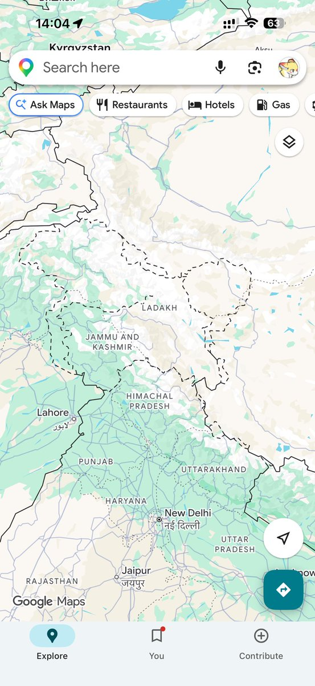
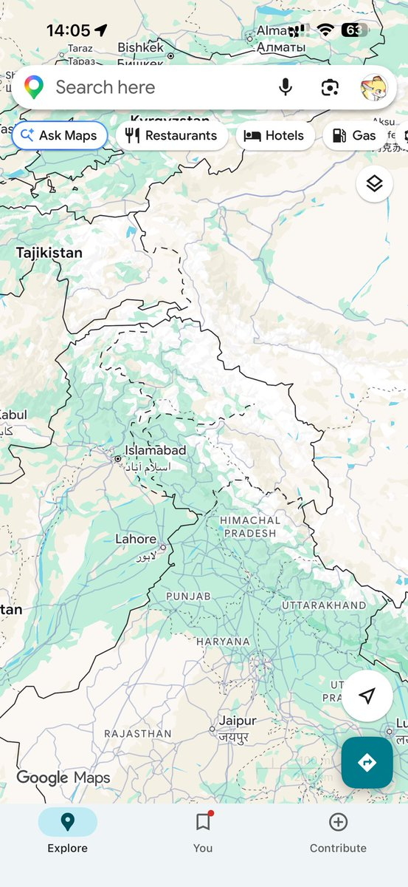
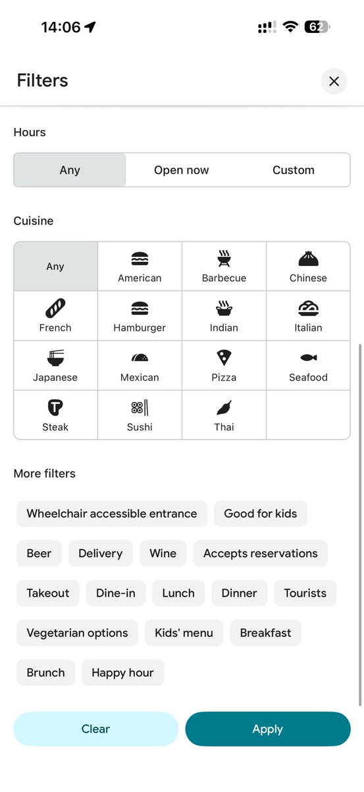
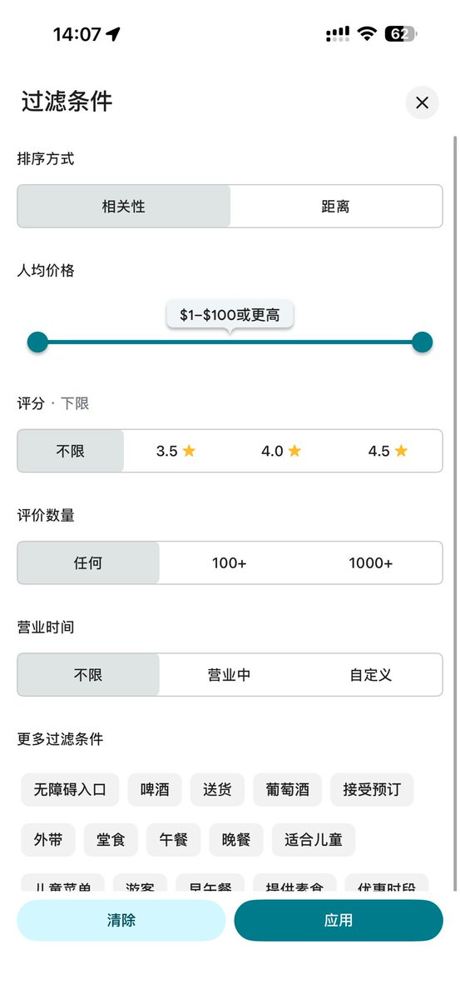

大狐帝国史官邹智萱（笔名段歌文）
@Rococo90933671
@Chisen_Lupus @DestinoAqua 我还是倾向于是中国卡的原因，中国卡会被封锁掉看评论和写评论的功能




甜狼赤弦
@Chisen_Lupus
@Rococo90933671 @DestinoAqua 哇真的诶 两个esim只要切换主卡就会显示不同的地图 美国卡显示的就全是虚线 中国卡在阿克塞钦的中国边界是实线但是印巴还是虚线 说明只要是第三方就会显示虚线
另外搜索餐厅选择全球菜系这些非政治的功能似乎是跟着语言来的 只有英文版才有 https://t.co/g5sWG0X5A0